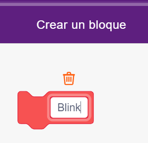
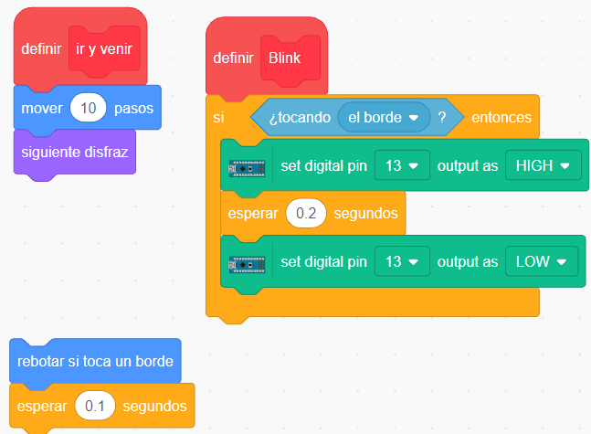
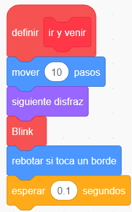
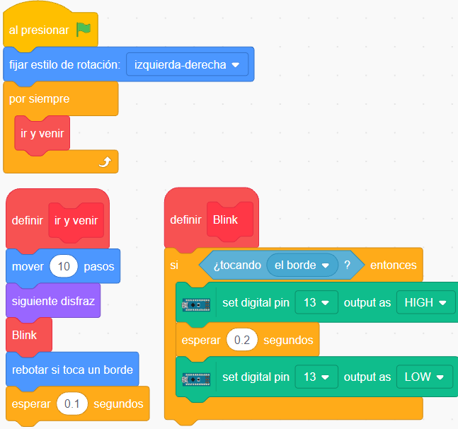

Creando bloques
Como lo hicimos anteriormente, vamos a crear nuestro bloque para el blink del led, conectado en el pin digital 13, de la placa Arduino Nano de PonchoBot.
|  |
Creamos un nuevo bloque con el nombre Blink, para pegar debajo de él los bloques correspondientes al blink del led, que ya tenemos programados.  En el lugar que quedó libre (debajo de siguiente disfraz )arrastramos el bloque Blink y debajo de él los bloques de rebotar ... y esperar ... para completar la programación.  |
Quedando la programación de esta manera:
